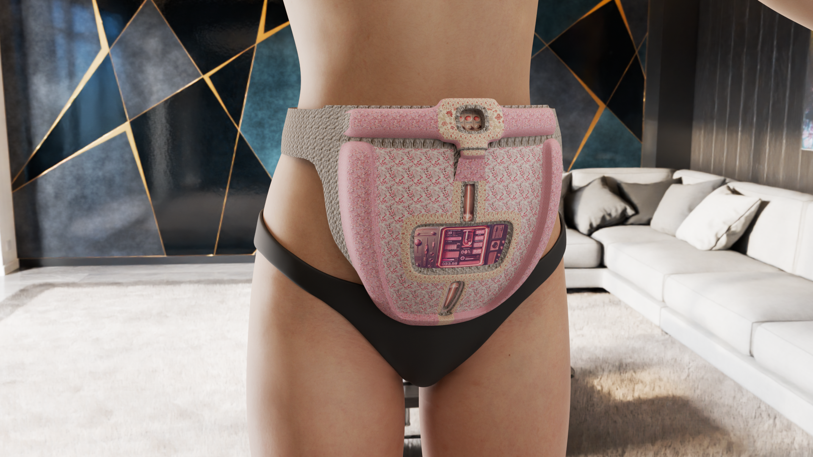
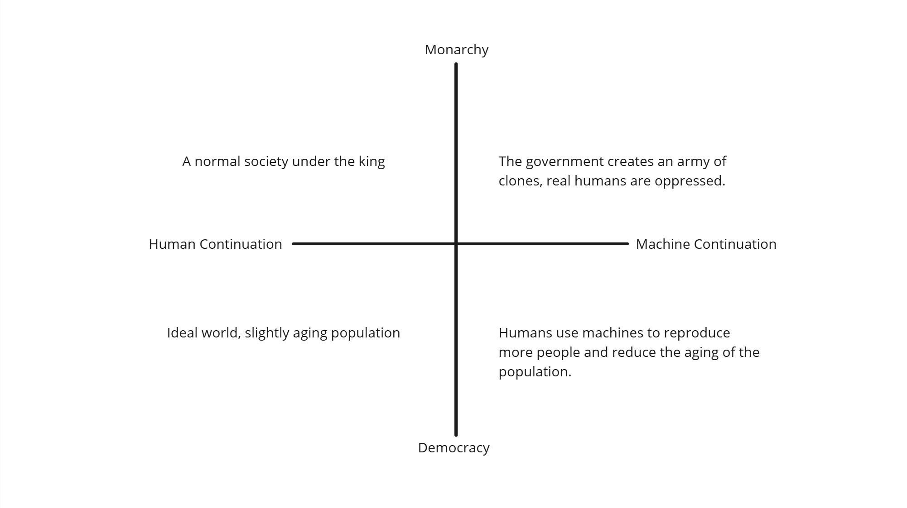
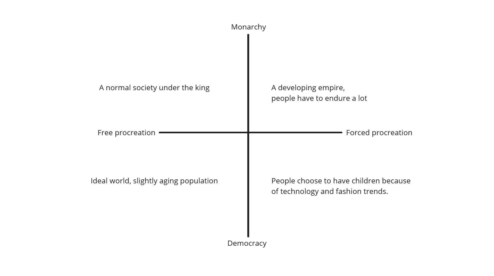
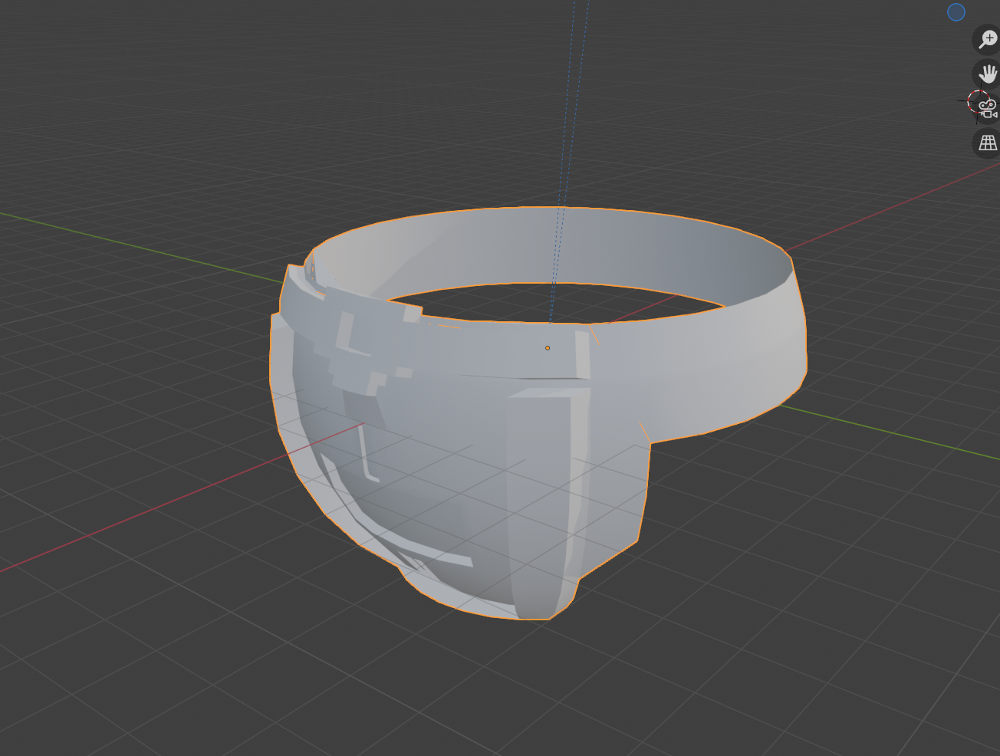
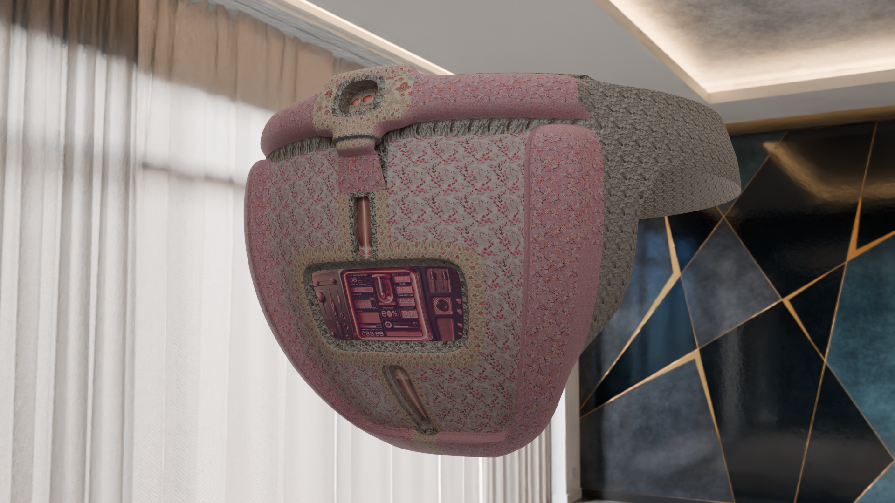

Archeology Demonstration
I have created an assisted reproduction device, which exists fifty years into the future. In that era, people live in a democratic society, and with the emergence of this device, they are more willing to have children.
The core function of this device is to accelerate the reproduction process, reducing the typical ten-month gestation period to five months, significantly alleviating the burden on pregnant individuals.
Its mechanism relies on a continuous supply of heat and nutritional supplements, while also monitoring the fetus's health in real-time. Additionally, some corporations have marketed it as a fashionable accessory, incorporating various design elements into its appearance, further boosting its popularity and sales.
Documentation
1. Constructing the worldview
Describtion: I initially designed my coordinate system with the x-axis representing reproduction through humans or machines, and the y-axis representing monarchic rule versus democracy. The overview of the future envisioned in each quadrant is written in the diagram. The archeology I want to create belongs to the fourth quadrant, as I find it to have a fascinating tension: it depicts a democratic society, yet at the same time, humans must rely on machines to reproduce an increasing number of people.
Describtion: In the second version of the coordinate system, I modified the x-axis to focus more on the driving forces behind reproduction. One side represents voluntary reproduction, while the other represents forced reproduction. Once again, I chose the fourth quadrant, where people use technological means to actively choose reproduction.
2. Model Draft
By subdividing the edges and reorganizing the surfaces of a sphere, the initial modeling of the device is completed. Different areas such as the display screen, buttons, and straps are delineated.
3. Add materials, improve model details, add scene hdr
Using Blender's built-in add-on BlenderKit, suitable materials were searched for and applied to the corresponding surfaces. To maintain visual consistency, most of the materials selected are in shades of pink. Moreover, in order to align with the theme of a fashion accessory, commonly used futuristic materials such as metal were deliberately avoided. Instead, materials like feathers and fabrics—which are soft and skin-friendly—were chosen.
Finally, an HDRI image of a modern living room was selected from BlenderKit to create the overall atmosphere.
4. Import the human model
To better demonstrate the product's usage, I found a suitable female body model on the Turbosquid website and then positioned the product on the model.